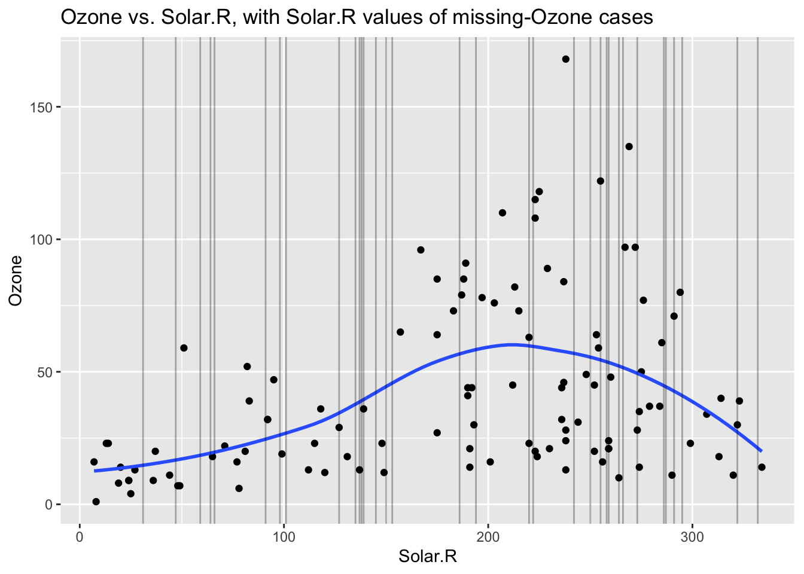
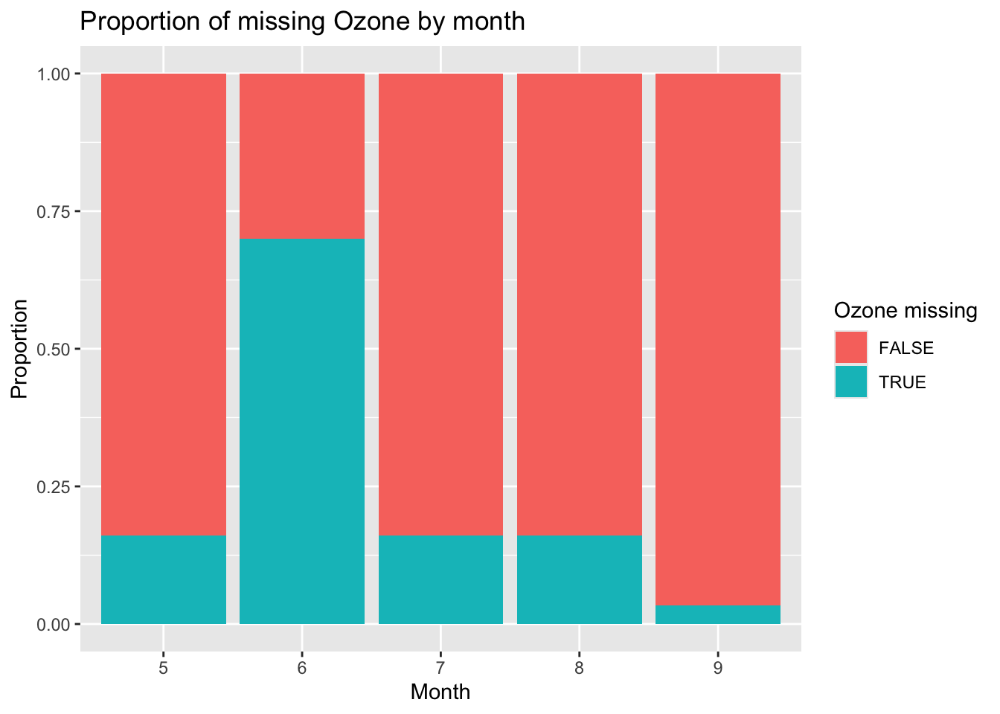
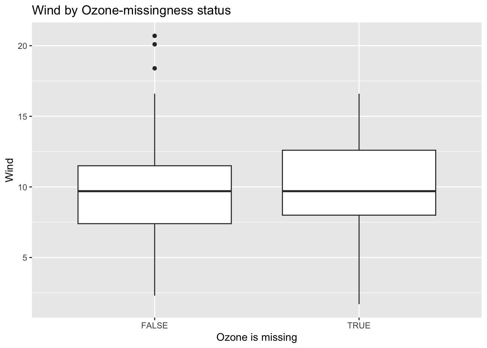
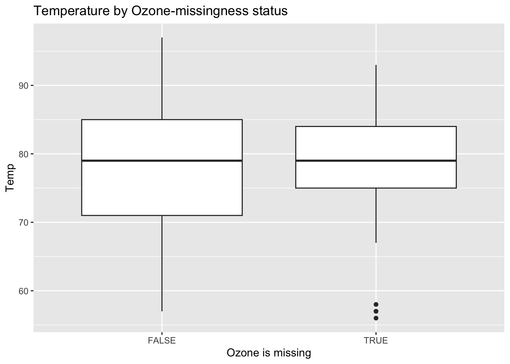
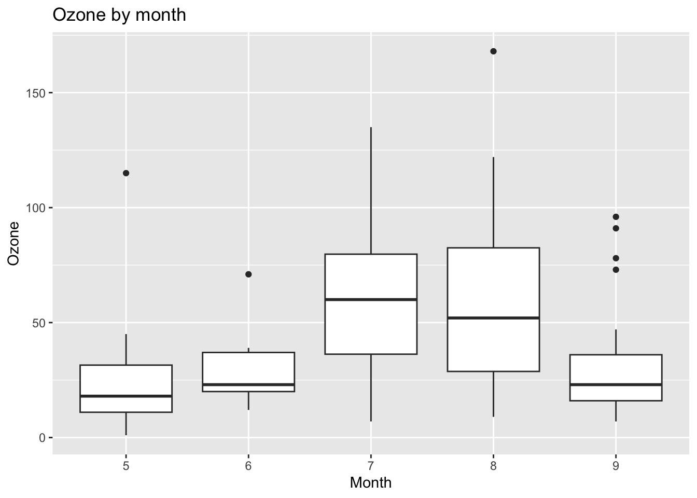
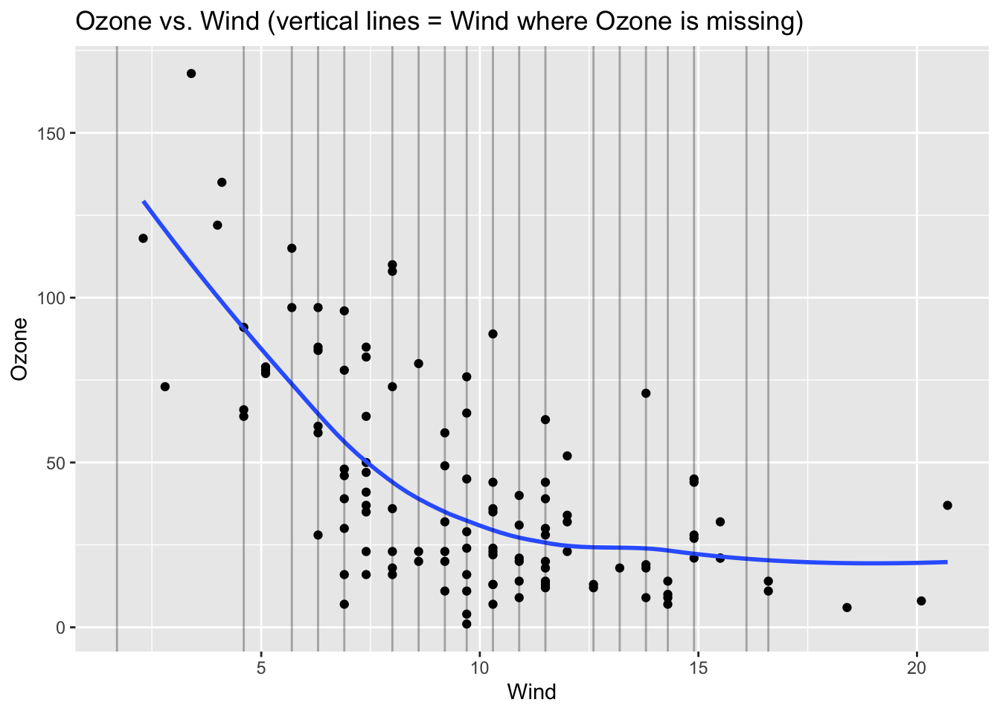
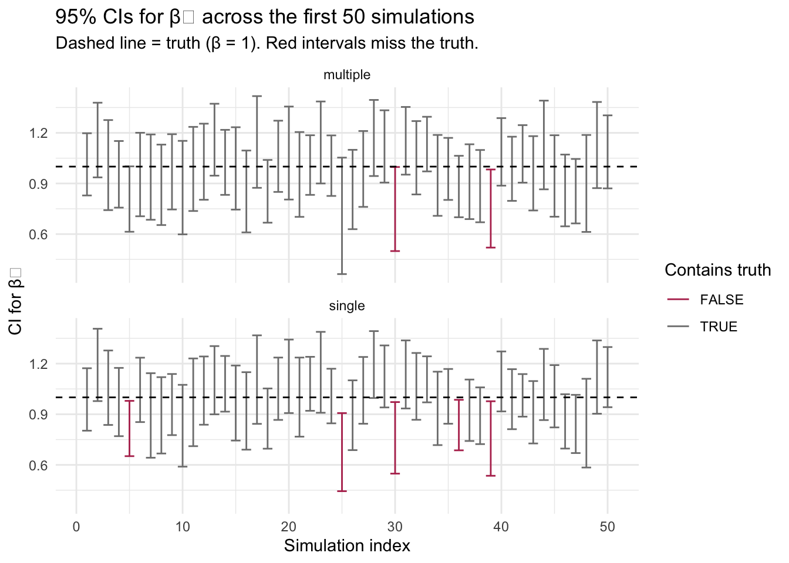

8 — Missing Data: Mechanisms, Exploration, and Imputation
Setup
🔥 Data Story Critique — Goalkeepers Report 2019: Examining Inequality
Source: https://www.gatesfoundation.org/goalkeepers/report/2019-report/#ExaminingInequality
What is the data story?
The 2019 Goalkeepers Report makes a data-driven argument that inequality within and between countries is the principal obstacle to meeting the Sustainable Development Goals by 2030, and that geography and gender together stack the deck against hundreds of millions of people. The piece is structured around a cartographic zoom-in: world map → the Sahel → Chad → a drought-prone region → a marginalized ethnic group → a single adolescent girl. It then pivots to two central visualizations — scatterplots of developing countries on child-mortality-versus-years-of-schooling axes in 2000 and 2017, followed by the same chart projected forward to 2030 — which make visible both universal progress and persistent gaps. A major methodological move is the use of new subnational (district-level) human-capital estimates: the India panel contrasts Kerala’s Kollam district (1 percent under-five mortality, 14 years of schooling) with Uttar Pradesh’s Budaun district (>8 percent mortality, ~6 years of schooling), a gap invisible at the national average. Three case essays then supply qualitative depth: primary health care (Ethiopia, Rwanda, Kenya), digital inclusion through India’s JAM trinity, and climate adaptation in Ethiopia. The report’s core policy argument is that human capital investment is the engine of development, that it should be designed to reach girls and lagging districts first, and that exemplar countries show it can be done on modest budgets.
What is effective?
The district-level disaggregation is the single strongest contribution. Moving past national averages to sub-national units is genuinely important — the Budaun–Kollam contrast communicates within-India inequality in a way that a single national statistic cannot, and the same move for Nigeria’s LGAs reinforces the point that development is uneven at every administrative scale. The temporal-scatterplot device (2000 → 2017 → 2030 projection) is a legitimate visual forecasting exercise that communicates progress, persistent gaps, and policy stakes simultaneously.
The first-person vignettes carry real weight. Githinji Gitahi walking with his mother to a rural dispensary, Kaba Urgessa situating Ethiopia’s 2015 drought against 1984, and particularly Mitselal Tekele Tesfay — who is given sustained space to articulate his own theory of his situation (“the weather is the will of God”), describe concrete adaptations (rainwater harvesting, mulching, switching from wheat to barley for his children), and name what is at stake for his family — anchor structural claims in texture without reducing the speakers to objects of compassion. That is more than most development communication achieves.
The cartographic zoom-in is rhetorically powerful and the use of concrete ratios (“a child in Chad is nearly 55 times more likely to die than a child in Finland”) avoids the trap of presenting percentages in isolation.
What could be improved?
The framing moves inequality from produced to distributed. The opening metaphor — the Gateses describing themselves as lottery winners, “born in a wealthy country to white, well-off parents” — and the closing line “No one’s life should be a roll of the dice” work together to render inequality as a matter of random cosmic distribution rather than historical production. Colonial borders, extractive trade arrangements, aid conditionalities, and the political economy of the global tax regime (within which Microsoft’s fortune was itself accumulated) are absent from the analysis. The direction of the zoom-in is not neutral either: the camera moves steadily toward the individual to be helped and away from the named systems producing her condition. A symmetrically valid zoom-out — girl → community → Chadian state → French colonial borders → commodity markets → the global tax architecture — would produce a very different policy conclusion. The report’s framing forecloses that alternative without engaging it.
“Exemplar learning” conflates transferable practices with embedded institutional configurations. The report treats Ethiopia, Rwanda, and Thailand as models whose primary-care architectures other countries can adopt if they “spend a little more, spend on the right priorities, spend more efficiently.” But Rwanda’s community-health-worker system is not a line item; it is embedded in a post-genocide developmental state with specific capacities for mobilization (umuganda), compliance, and the suppression of exit options, capacities that are not available to governments operating in different political configurations. Ethiopia’s Productive Safety Net Programme similarly depends on a developmental-state apparatus with its own political costs. Thailand’s universal coverage is inseparable from its post-1997 social contract. Presenting these as swappable technical templates — rather than as three very different political achievements, each with its own corridor of viability — overstates the portability of success. The report would be strengthened by asking what conditions made each exemplar possible before prescribing its practices.
Policy preferences are presented as success stories without disclosure. The JAM-trinity essay celebrates Aadhaar and biometric authentication as empowering the poor, without engaging the well-documented exclusionary effects — biometric authentication failures for manual laborers whose fingerprints have worn down, ration denials in states like Jharkhand and Rajasthan tied to Aadhaar-linkage failures, and the broader question of what happens when a welfare floor is gated behind a biometric layer that fails disproportionately for the most marginalized. The Gates Foundation has institutional stakes in digital-ID infrastructure globally, which is a relevant disclosure that the essay does not make.
Uncertainty is not visualized. The 2030 projections are presented as confident trajectories without visible uncertainty bands, and the district-level estimates — particularly for small populations — are model outputs with non-trivial uncertainty that is collapsed into point estimates. For a document that will be used in policy contexts, that collapsing matters.
Exercise — Missing-Data Mechanisms
1. Clinical trial dropouts, reasons unrecorded
Most plausibly MNAR. Clinical-trial dropout is typically driven by side effects, worsening disease, or outcomes related to the very thing being measured — the probability of missingness is a function of the unobserved outcome itself. Without recorded reasons we cannot even partially control for it, which is the classic MNAR situation. A secondary possibility is MAR, if dropout correlates with baseline covariates (age, comorbidity, site) that are recorded. In practice analysts usually model it as MAR conditional on observed covariates and then run MNAR-style sensitivity analyses.
2. Weather station: hourly temperature, humidity, wind
All three mechanisms are plausible; the distinction is empirical.
- MCAR if the device fails through truly random events — cosmic-ray bit flips, battery depletion unrelated to conditions.
- MAR if failures correlate with other recorded variables — e.g., humidity sensor drops out when rainfall (recorded) is high.
- MNAR if failures happen at extreme values of the variable itself — anemometer breaks in the highest winds, temperature probe saturates on the hottest afternoons. That is the scariest case because the missing values are systematically the ones you most want.
Exploring Missingness in airquality
Missingness by variable
Ozone Solar.R Wind Temp
Min. : 1.00 Min. : 7.0 Min. : 1.700 Min. :56.00
1st Qu.: 18.00 1st Qu.:115.8 1st Qu.: 7.400 1st Qu.:72.00
Median : 31.50 Median :205.0 Median : 9.700 Median :79.00
Mean : 42.13 Mean :185.9 Mean : 9.958 Mean :77.88
3rd Qu.: 63.25 3rd Qu.:258.8 3rd Qu.:11.500 3rd Qu.:85.00
Max. :168.00 Max. :334.0 Max. :20.700 Max. :97.00
NA's :37 NA's :7
Month Day
Min. :5.000 Min. : 1.0
1st Qu.:6.000 1st Qu.: 8.0
Median :7.000 Median :16.0
Mean :6.993 Mean :15.8
3rd Qu.:8.000 3rd Qu.:23.0
Max. :9.000 Max. :31.0
# A tibble: 6 × 3
variable n_miss pct_miss
<chr> <int> <num>
1 Ozone 37 24.2
2 Solar.R 7 4.58
3 Wind 0 0
4 Temp 0 0
5 Month 0 0
6 Day 0 0 Ozone has 37 missing values (24.2%) and Solar.R has 7 (4.6%). Wind, Temp, Month, and Day are complete.
Missingness by case
# A tibble: 15 × 3
case n_miss pct_miss
<int> <int> <dbl>
1 5 2 33.3
2 27 2 33.3
3 6 1 16.7
4 10 1 16.7
5 11 1 16.7
6 25 1 16.7
7 26 1 16.7
8 32 1 16.7
9 33 1 16.7
10 34 1 16.7
11 35 1 16.7
12 36 1 16.7
13 37 1 16.7
14 39 1 16.7
15 42 1 16.7Cases 5 and 27 are missing on two variables (33% of fields). Most cases missing at all are missing only one field, so imputation is feasible — we have enough observed information per row to build a model from.
Can Solar.R predict Ozone?
Code

The vertical lines (Solar.R values where Ozone is missing) fall within the observed Solar.R range. Imputation from Solar.R would not require extrapolation, which is what we want.
Exercise — Mechanism Detection Practice (Alt 1 vs. Alt 2)
The two alternative situations in the course materials share a common feature — Ozone is missing specifically when Solar.R is at higher values — but they differ in whether the missing region overlaps with observed data.
Alt 1. The high-Solar.R region where Ozone is missing partially overlaps with observed points. A regression of Ozone on Solar.R still has anchoring observations near the missing region, so the prediction is interpolation. The risk is moderate — the imputed values will depend on how well the fitted relationship extends into the high-Solar.R tail, but we are not flying blind.
Alt 2. The high-Solar.R region where Ozone is missing extends beyond any observed Ozone point. Imputation here is pure extrapolation: the model is guessing what the Ozone–Solar.R relationship looks like in a region the data never visited. This is dangerous because (a) the form of the relationship could change outside the observed range (non-linearity, saturation), and (b) there is no within-sample way to detect that it has.
Contrast with the actual airquality situation. In the real data, Ozone missingness is not strongly tied to any one end of the Solar.R distribution — the missing-Ozone vertical lines span the observed Solar.R range. That is the most favourable situation for imputation, and the weakest evidence for a simple MAR-via-Solar.R story (missingness here is probably explained by other variables, which the next exercise investigates).
Takeaway. When evaluating imputation feasibility, look not only at whether missingness relates to predictors but at whether the missing region is within the convex hull of the observed predictor space. Extrapolation-based imputation will produce values that look plausible in a table and are completely unreliable in reality.
Exercise — Ozone Mechanism Detection (continued)
We now check whether Ozone missingness and Ozone value relate to Month, Wind, and Temp.
Does missingness depend on Month?
Code

Missingness is not uniform across months — June has a notably higher share of missing Ozone values. This is evidence that Ozone missingness is at least MAR with respect to Month.
Does missingness depend on Wind or Temp?
Code

Code

Wind and Temp distributions look similar whether Ozone is missing or not — neither is a strong driver of Ozone missingness on its own.
Do these variables predict the value of Ozone?
Code

Code

Summary for the imputation model
-
Missingness of Ozone is clearly related to
Month(June higher); weakly related to Wind and Temp. -
Value of Ozone is related to
Month(higher in July/August), negatively related toWind, positively (and non-linearly) related toTemp. - The Wind and Temp values of missing-Ozone cases fall within the observed range, so a regression model can interpolate rather than extrapolate.
A linear regression with Month, Wind, and Temp — possibly with a log-transform on Ozone (strong right skew) or a quadratic Temp term — should be a reasonable imputation model. The story is most consistent with MAR: missingness is related to observed variables (Month in particular), not convincingly to unobserved values of Ozone itself.
Simulation Study — Single vs. Multiple Imputation
The setup
We generate data where we control both the mechanism of missingness and the true relationship:
x1 ~ Uniform(0, 1)-
x2 = x1 + Normal(0, 1)— correlated with x1 -
P(x2 missing) = x1 / 2— MAR missingness (probability depends on observed x1) -
y = x1 + x2 + Normal(0, 1)— true β for x2 is 1
We then fit y ~ x1 + x2 after either single or multiple imputation and ask: how often does the 95% confidence interval for β₂ contain the truth (= 1)? A well-calibrated procedure should hit 95%.
Helper functions
Code
# Simulate one dataset of size n, with MAR missingness on x2
gen_sim_data <- function(n) {
tibble::tibble(
x1 = runif(n, min = 0, max = 1),
x2 = x1 + rnorm(n, mean = 0, sd = 1),
# P(missing) depends on x1 (observed) → MAR
x2_miss_bool = rbinom(n, size = 1, prob = x1 / 2),
x2_NA = dplyr::if_else(x2_miss_bool == 1, NA, x2),
y = x1 + x2 + rnorm(n, mean = 0, sd = 1)
)
}
# Build imputation model using MICE, fit lm on each imputed dataset
build_imputation_model <- function(data, num) {
mice_obj <- mice::mice(
data |> dplyr::select(x1, x2_NA, y),
m = num, # number of imputed datasets
method = "norm", # Bayesian linear regression imputation
printFlag = FALSE
)
with(mice_obj, lm(y ~ x1 + x2_NA))
}
# Pull 95% CI from a single-imputation fit
get_single_imputation_ci <- function(single_imputation_model) {
ci <- single_imputation_model$analyses[[1]] |> confint(level = .95)
c(ci["x2_NA", "2.5 %"], ci["x2_NA", "97.5 %"])
}
# Pull 95% CI from a pooled multiple-imputation fit (Rubin's rules)
get_multiple_imputation_ci <- function(multiple_imputation_models) {
pooled_res <- mice::pool(multiple_imputation_models)
summ <- summary(pooled_res, conf.int = TRUE, conf.level = 0.95)
row <- summ |> dplyr::filter(term == "x2_NA")
c(row |> dplyr::pull(`2.5 %`),
row |> dplyr::pull(`97.5 %`))
}Running the simulation
Code
set.seed(224)
num_simulations <- 200 # 1000 gives tighter estimates but is slow
dataset_size <- 100
ci_list <- vector("list", length = num_simulations)
system.time({
for (i in seq_len(num_simulations)) {
sim_data <- gen_sim_data(dataset_size)
model_single <- build_imputation_model(sim_data, 1)
ci_single <- get_single_imputation_ci(model_single)
model_multiple <- build_imputation_model(sim_data, 10)
ci_multiple <- get_multiple_imputation_ci(model_multiple)
ci_list[[i]] <- tibble::tribble(
~imputation, ~ci_lower, ~ci_upper,
"single", ci_single[1], ci_single[2],
"multiple", ci_multiple[1], ci_multiple[2]
)
}
}) user system elapsed
11.301 0.269 11.702 Coverage probability
Code
# A tibble: 2 × 3
imputation coverage mean_ci_width
<chr> <dbl> <dbl>
1 multiple 0.955 0.448
2 single 0.915 0.403What the simulation shows
Two things:
Coverage. The nominal level is 0.95. Multiple imputation should land close to it; single imputation lands noticeably below. This is the canonical result — single imputation treats filled-in values as if they were observed, which pretends the data contain more information than they actually do, which shrinks the standard errors, which makes the interval too narrow to cover the truth the advertised share of the time.
Interval width. Multiple-imputation intervals are wider than single-imputation intervals. That is not a failure — it is honest accounting. The extra width is Rubin’s rules adding the between-imputation variance to the within-imputation variance, which is the missing information we pretended not to have.
Visualizing the coverage gap
Code
dplyr::bind_rows(ci_list) |>
dplyr::mutate(
sim_id = rep(seq_len(num_simulations), each = 2),
contains_truth = ci_lower < 1 & ci_upper > 1
) |>
dplyr::filter(sim_id <= 50) |> # first 50 sims for readability
ggplot(aes(x = sim_id, ymin = ci_lower, ymax = ci_upper,
colour = contains_truth)) +
geom_errorbar() +
geom_hline(yintercept = 1, linetype = "dashed") +
facet_wrap(~ imputation, ncol = 1) +
scale_colour_manual(values = c("TRUE" = "grey50", "FALSE" = "#b6345c")) +
labs(
title = "95% CIs for β₂ across the first 50 simulations",
subtitle = "Dashed line = truth (β = 1). Red intervals miss the truth.",
x = "Simulation index",
y = "CI for β₂",
colour = "Contains truth"
) +
theme_minimal()
The single-imputation panel shows systematically narrower intervals and visibly more red (missed) intervals than the multiple-imputation panel. That is the picture you would expect a simulation study to produce — and it is the argument for always using multiple imputation when the missing data matter for the inference you care about.
Reflection
Two threads run through today’s material:
Mechanism is not a property of the variable; it is a property of the joint distribution between missingness and the observed/unobserved parts of the data. A variable can be MCAR in one study design and MAR in another that records an additional covariate. This has a practical implication: recording more covariates changes the mechanism — sometimes promoting what would have been MNAR into something analyzable as MAR. Designing data collection is therefore half of handling missingness.
Single imputation lies about how much you know; multiple imputation tells the truth. The uncertainty loss from single imputation is not visible in any single analysis — the point estimates look fine, the confidence intervals look reasonable, and the procedure produces an answer. The cost only becomes visible at the population-of-experiments level, which is exactly what simulation studies are for. This is a general lesson about statistical methods: methods that under-represent uncertainty look more decisive than methods that represent it honestly, and the apparent decisiveness is a bug, not a feature.
3. Social media: missing interactions due to bugs
The general lesson: MCAR/MAR/MNAR is not a property of the phenomenon but of the joint distribution between missingness and observed-vs-unobserved variables in your specific dataset. Two datasets on the same topic can have different mechanisms depending on what was recorded.